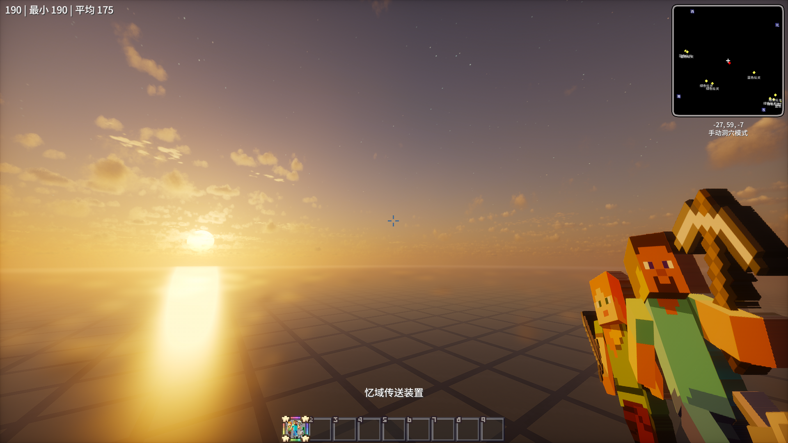
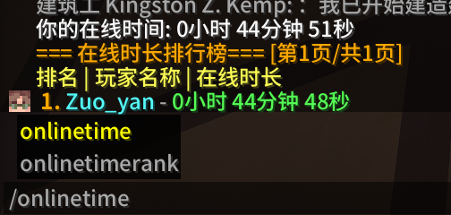
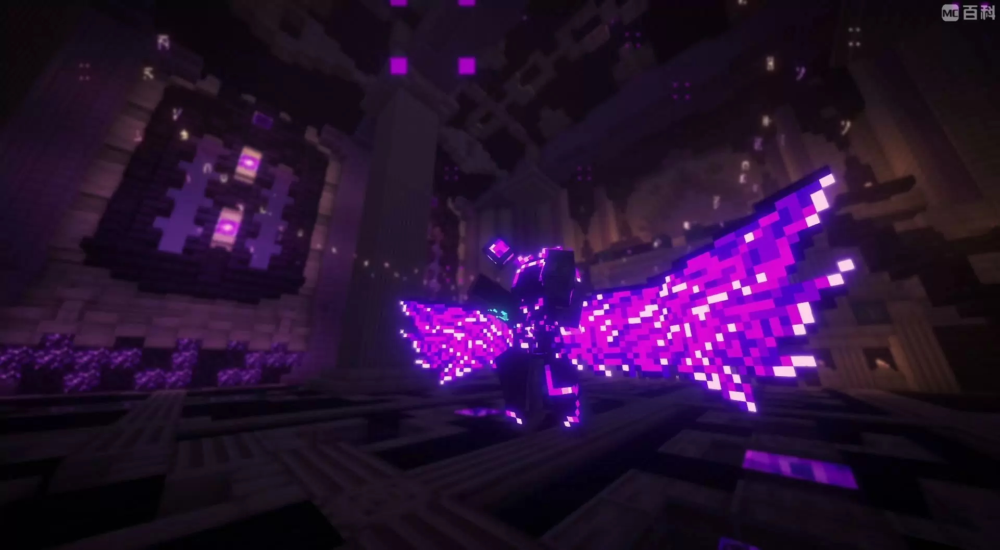
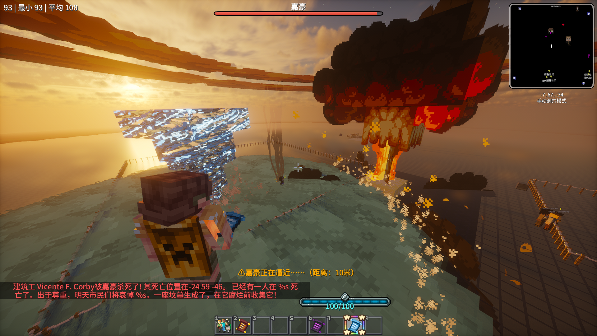

由佐言最后编辑于：2025年8月2日
1. 所有玩家统一出生在忆域维度坐标为0 0的位置
2. 忆域中的时间为永远的黄昏，并且怪物不会自然生成，是一个相对安全的世界
3. 维度中不会生成矿物，但其地底结构为分层设计。为了方便发展
机械动力以及沉浸工程等科技模组，在地底放置了大量岩浆等资源
4. 传送器会记住你在维度之间传送的位置,例如你在主世界的
地底传送到忆域，那么再次传送回到主世界时你依旧会在地底
5. 这个世界中不会自然生成任何建筑，是绝对的超平坦世界
从2.0版本算起，你现在可以用onlineTime指令查看自己以及其他玩家的在线时长了
现在，除了火把，你可以种植植物来抵御在主世界中到处生成的怪物了
我想他最让人惊艳的是为铁魔法添加了很多特效惊艳的法术（这确实是一个体量和质量都非常大的附属模组）
 其他更新内容展示
不会替换Mod文件？